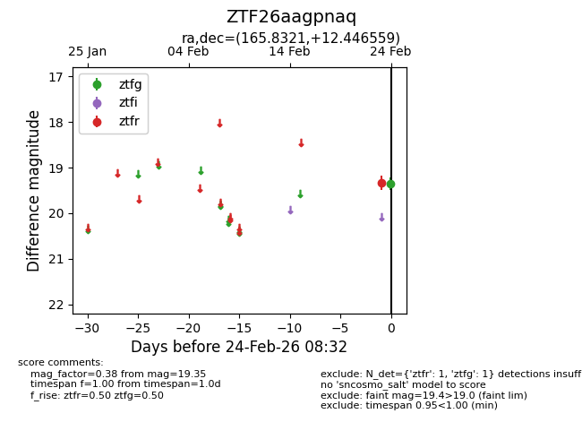
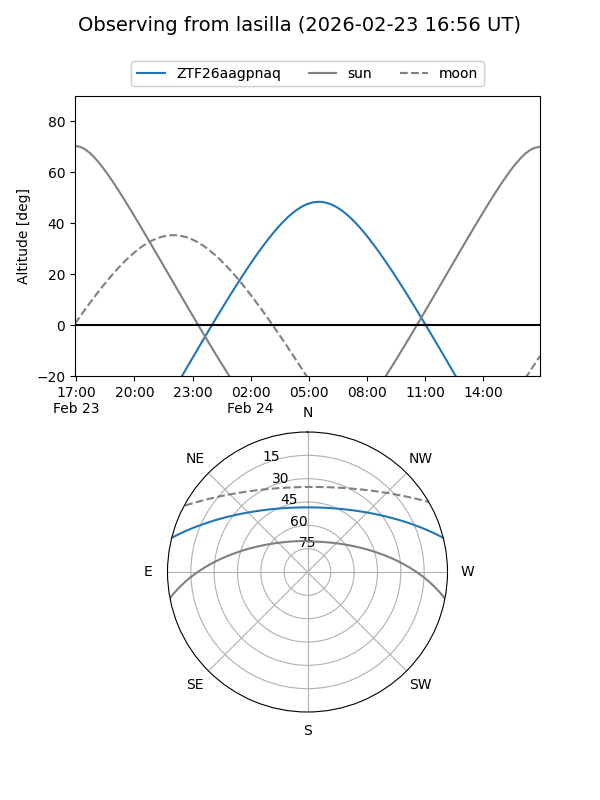
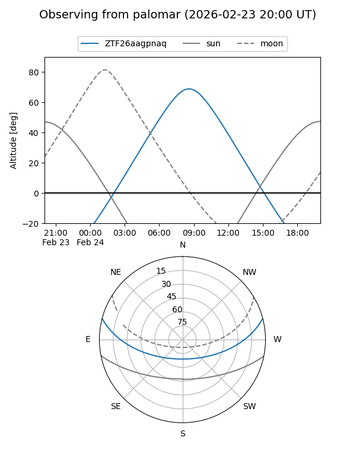

ZTF26aagpnaq
Target ZTF26aagpnaq at 2026-02-24 09:08
Aliases and brokers:
FINK: link
Lasair: link
ALeRCE: link
alt names
ZTF26aagpnaq (ztf,fink_ztf)
Coordinates:
equatorial (ra, dec) = 165.8321,+12.44656
equatorial (HMS+DMS) = 11:03:19.70,+12:26:47.61
galactic (l, b) = (237.7091,+60.74308)
Flags:
Photometry:
last ztfg=19.35, ztfr=19.33
1 ztfg, 1 ztfr detections
Lightcurve

Visibility


Additional plots